Web Application
This is how the web interface looks like: 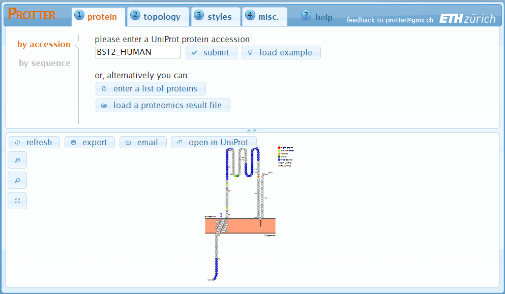 In the upper region, there are four tabs to specify various settings. While in the lower region, there is the actual protein visualization. Whenever you change a parameter, the visualization will automatically refresh and show your changes instantaneously.
Typically, you will go through the following steps as indicated at the top of the screen:Protein
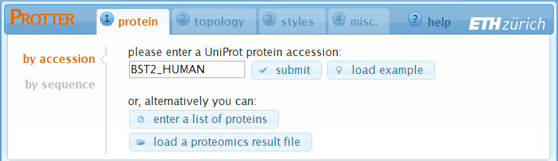You start at the "protein" settings where you specify the protein that you want to visualize. Just enter the UniProt protein identifier of your protein. You can also provide gene names and Protter will ask you back in case that this gene name is ambiguous within UniProt.
- Click submit to set the identifier and create a first visualization.
- The load example button will enter the identifier BST2_HUMAN for you.
- The enter a list of proteins and the load a proteomics result file button allow you to specify multiple proteins for batch visualization. See the help section "Web Application - Batch Processing" for details.
In case you want to visualize an arbitrary amino acid sequence, simply switch to "by sequence" and enter your sequence in the textbox:
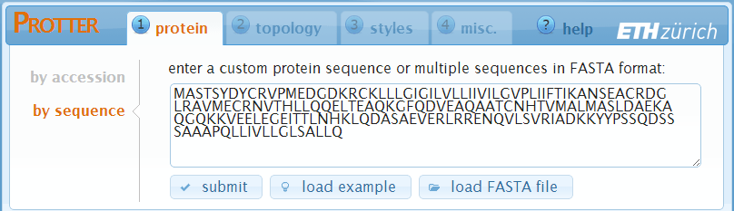- Click submit to set the sequence and create a first visualization.
- The load example button will enter an exemplary amino acid sequence for you.
- The load FASTA file button allows you to load a protein sequence file in FASTA format. See the help section "Web Application - Batch Processing" for details.
Topology

Specification of the protein's sequence has generated a first visualization using default parameters. In the "topology" settings, you can fine tune the protein's topology.
A protein's transmembrane topology consists of: N-terminus location, transmembrane regions and, optional, membrane anchors:
In the first panel, you can switch between "no membrane", "automatic" (default) and "custom".
- "no membrane" will completely hide the membranes, which is useful for non-membrane proteins.
- "automatic" will come up with a transmembrane topology depending on your input sequence: for UniProt identifiers it will use the annotated topology, and for amino acid sequences it will use a transmembrane topology predicted by Phobius.
- "custom" allows you to specify all the details yourself:
- "N-terminus location" — sets the N-terminus be located outside, inside or as annotated by UniProt or as predicted by Phobius.
- "transmembrane regions" — set the transmembrane regions by adding an arbitrary number of regions, see also Definition of the regions. You can interactively select from a pre-selected set of annotated regions by clicking in the textfield.
- "membrane anchors" — set the membrane anchor regions by adding an arbitrary number of regions, see also Definition of the regions. You can interactively select from a pre-selected set of annotated regions by clicking in the textfield.
Styles

In Protter, Styles are used to highlight certain regions of the protein sequence by varying four parameters:
- the color of the amino acid letter
- the shape of the amino acid symbol
- the symbol’s frame color
- the symbol’s background color
The "styles" settings shows a table of all currently specified styles. Each row represents a style and has 8 columns:
- "name" [optional] — represents an arbitrary name for the style. This name will also be used for the legend.
- "shape" — set the shape of the amino acid symbol. Use the button to not set a shape for this style.
- "char color" — set the color of the amino acid letter. Click on the color-square to open up a color selection window: 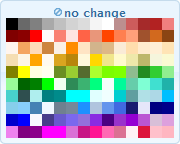 Click on the desired color or choose the no change option to not set a char color for this style.
- "frame color" — set the frame color of the amino acid symbol.
- "back color" — set the background color of the amino acid symbol.
- "region"
— in this textfield enter one or more regions of your protein that this style should be applied to.
Multiple regions can be separated by new lines or by commas.
A region can be:- a single position, e.g.: 5
- a range of positions, e.g.: 123-144
- a plain sequence, e.g.: ELVISISALIVE
- a regular expression matching parts of the sequence. If there is a regexp-group specified, only the group of the match will be part of the region, e.g.: (N).[ST]
- an annotated region. You can interactively select from all available annotated regions by clicking in the lower-right part of the textfield: 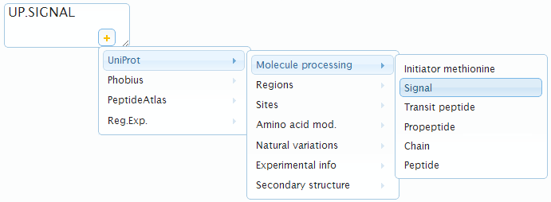
- "active" — unselect this toggle-button to exclude this style from visualization but still keep it in the style table.
- "delete" — click to remove this style from the visualization and the style table.
If highlighted regions (partly) overlap, styles defined further down will override styles defined further up. You can drag-and-drop the rows in the table using the double-arrow on the very beginning of each row to reorder the priority of your styles.
Click at the end of the style table to add a new empty style.
Click at the end of the style table to remove all styles at once.
Miscellaneous
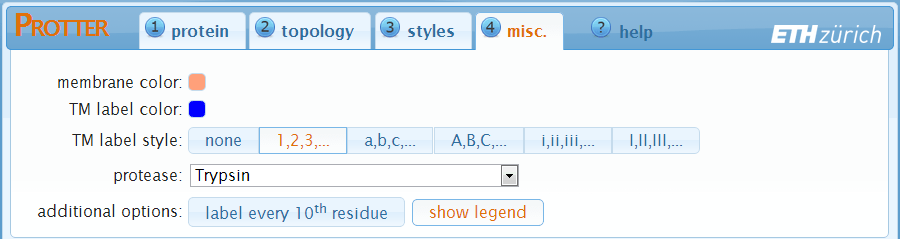In the "misc." settings you can modify details of the protein visualization.
- membrane color — set the fill color of the membrane.
- TM label color — set the color of the transmembrane-domain labels.
- TM label style — set the style of the transmembrane-domain labels. Select none to not show labels for the transmembrane-domains.
- protease — select a protease to display protease specific cleavage sites as dashed lines in your visualization.
- label every 10th residue — add small position labels to your protein sequence visualization.
- show legend — add a legend summarizing all the styles used.
- TeXtopo options — specify additional options for the underlying TeXtopo layout generation (e.g. flipNterm, loopextent, loopfoot, etc; see TeXtopo documentation for a complete list of options). 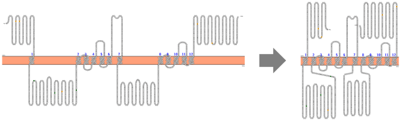
Visualization
Move the mouse cursor on any amino acid to show its position within the protein and the styles applied to this position. To interactively select a range, click the amino acid at the beginning of the desired range and subsequently click the amino acid at the end of the desired selection. After selection the range will be available in the annotation dropdown menu for styling regions. 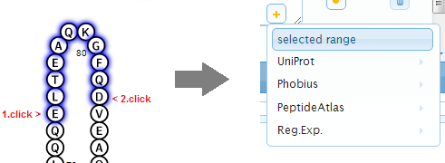Visualization settings
In the lower region of the web application, next to the protein visualization, there are some settings to adjust the visualization itself: 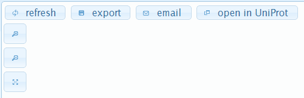Web Application - Batch Processing
On top of visualizing your protein of interest you can also load a list of proteins, browse through the visualizations, and download a combined visualization of all proteins as one PDF document or as ZIP archive of separate files. This is particularly useful to visualize results of mass-spectrometry based proteomics studies.
Loading Proteins and Peptides
There are different ways of loading a list of proteins in Protter:-
Specify multiple protein sequences in FASTA format
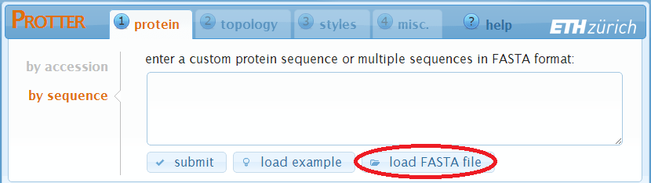 You can enter multiple sequences in FASTA format directly into the textfield and click submit, or load a FASTA file from your computer using the load a FASTA file button. -
Load a list of protein identifiers
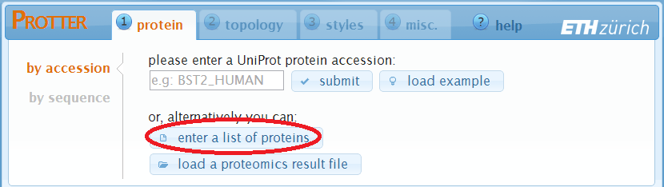 A click on enter a list of proteins will open up the following dialog: 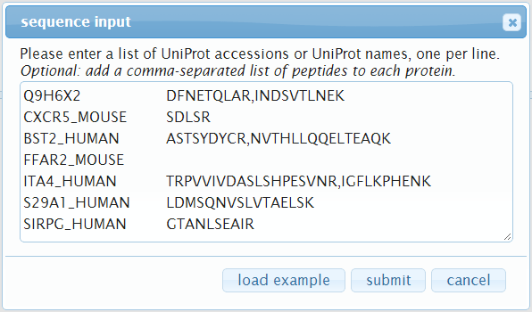 Here you can enter a list of protein accessions, one per line. Optionally, you can also specify a list of peptides per protein: add a space or tab after the protein accession and then a comma-separated list of peptide sequences. Click submit when you are done to start loading the proteins. -
Load a proteomics result file
Protter can analyze proteomics result files and extract protein names, peptides and PTM identifications: 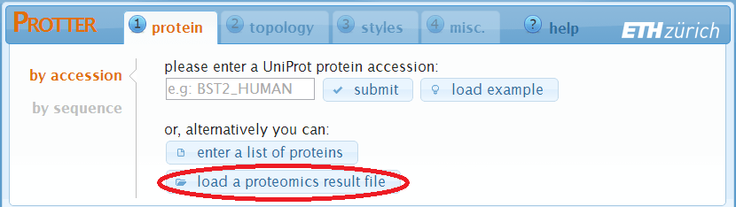 A click on load a proteomics result file will open up the following dialog: 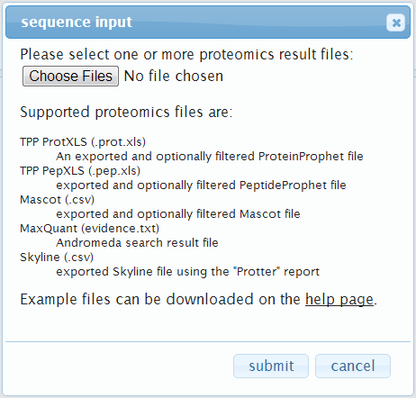 Here you can select one or more proteomic result files. Currently supported files are:"TPP ProtXLS" — First, in the ProteinProphet web-interface, filter the list of proteins as desired (e.g. by probability). Then export the results as Excel file: 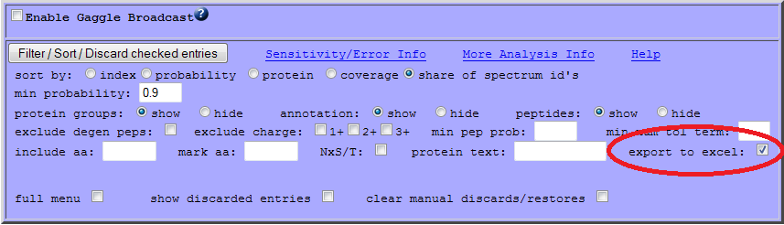 Download the exported file to your disk (example file).
"TPP PepXLS" — First, in the PeptideProphet web-interface, filter the list of peptides as desired (e.g. by probability). Then export the results as Excel file: 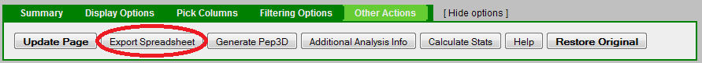 Download the exported file to your disk (example file).
"Mascot" — First, in the Mascot web-interface, select "export as CSV": 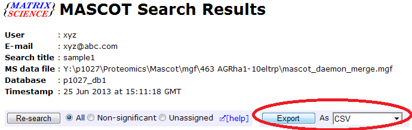 Then you can filter the peptides and proteins (e.g. by ionscore) and export to a CSV file. Download the exported file to your disk (example file).
"MaxQuant" — Locate the "evidence.txt" file of your MaxQuant analysis and optionally prefilter it (e.g. by PEP) using e.g. Microsoft Excel. 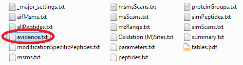
"Skyline" — After installing the Protter Skyline plug-in (download), you will find a Protter report under File > Export > Report...: 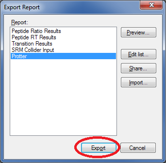 Select Protter and click Export to generate a suitable .csv file.
Click submit when you are done to start loading the proteins. -
Protter Skyline plug-in
Make sure you installed the Protter Skyline plug-in (download; installation instructions).
From your Skyline document select Tools > Protter to directly open up Protter with all your proteins and peptides: 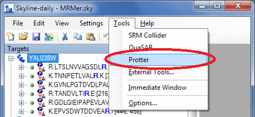
Browsing Proteins and Peptides
After having loaded a FASTA file, a list of protein IDs or a proteomics result file, Protter will insert a protein/peptide browser panel on the left side with a tree-like view of all proteins and peptides (optional):
By clicking a protein, Protter will immediately load the selected protein in the visualization pane. Additionally, if specified, the list of peptides of this protein will be shown.
Clicking a peptide sequence will select (see Visualization section) the corresponding region on the amino acid sequence in the protein visualization:
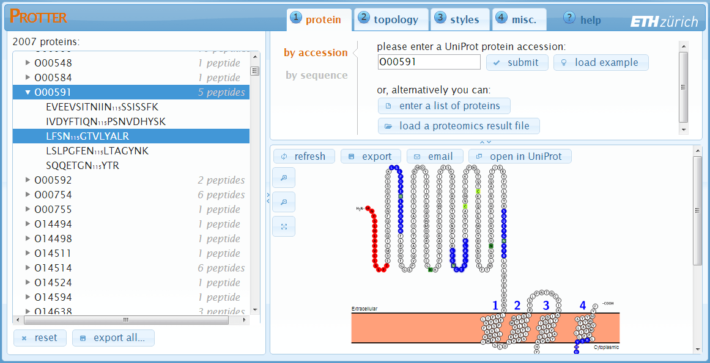Click reset to unload all proteins/peptides and reset Protter to start over again.
Click export all... to open up the export all proteins dialog:
Exporting visualizations for all proteins
Click export all... at the bottom of the protein table to open up the export all proteins dialog: 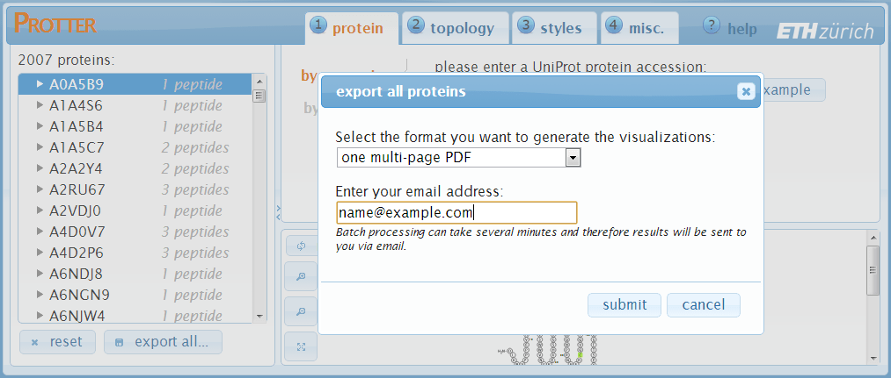 The protein visualizations can be exported to:- one multi-page PDF (protein accession as page title)
- ZIP archive with individual PDFs (files named by accession)
- ZIP archive with individual SVGs (files named by accession)
- ZIP archive with individual PNGs (files named by accession)
Note: the public Protter server is currently limited to 100 proteins in batch export. To generate visualizations of bigger protein lists you can download and setup your own local Protter server. See Installation & Requirements of the Server software section below.
Parameters for API access
All parameters have to be separated by a &
e.g.: create?param1¶m2¶m3&...
- seq | up
-
To specify a sequence you can either enter the sequence itself via the seq parameter
e.g.: seq=ELVISISALIVEor a Uniprot Name or Accession by the up parameter.
e.g.: up=CD44_HUMANNote: only one of both should be set.
- tm
-
tm is used to set the transmembrane regions. This parameter is optional and will result in a visualization without a membrane if omitted.
e.g.: tm=phobius.tm
Note: if tm=auto transmembrane topology will be automatically determined, which is equivalent to nterm=UP.NTERM&tm=UP.TRANSMEM&anchor=UP.LIPID for a UniProt identifier and nterm=PHOBIUS.NTERM&tm=PHOBIUS.TM for any other given sequence. - nterm
-
nterm specifies the location of the protein's N-terminus. It can be intra | extra | up.nterm | phobius.nterm. This parameter is optional and will result in a visualization without a membrane if omitted.
e.g.: nterm=intra - anchor
-
anchor specifies regions of membrane anchors which will be considered in the visualisation of the protein's topology.
e.g.: anchor=UP.LIPID - format
-
specifies the requested image format. Currently supported formats are svg | png | pdf.
e.g.: format=svg - mc
-
mc sets the membrane color.
e.g.: mc=lightsalmon - lc
-
lc sets the transmembrane label color.
e.g.: lc=blue - tml
-
tml sets the transmembrane label style and can be either none | numcount | alphacount | Alphacount | romancount | Romancount.
e.g.: tml=Alphacount
Note: the value is case sensitive! - cutAt
-
specifies the positions where potential enzymatic cleavage should be indicated. This parameter is usually used with a peptidecutter-region.
e.g.: cutAt=peptidecutter.Tryps - lblin | lblout
-
override the default labels at the membrane (intra & extra).
e.g.: lblin=Nuclear&lblout=Perinuclear%20space - numbers
-
add this parameter to get number-labels at every 10th residue.
e.g.: numbers
Note: this parameter does not need a value. - title
-
adds a centered title to the top of the protein plot.
e.g.: title=MyProtein - legend
-
add this parameter to include a legend of all defined styles right next to the protein plot
e.g.: legend
Note: this parameter does not need a value.
Definition of the styles
A style is defined and applied to a collection of regions as a single parameter:
e.g.: style=regionA[,regionB,...]
Numerous styles may be displayed by treating them as individual parameters (i.e. separated by a &).
A style is made up of one or more comma separated style-parameters: p1:v1[,p2:v2,...]
Later style definitions will override previous ones and if a style-parameter is omitted the value of the previous style will be used.
Following style-parameters are available:
- s defines the shape. The value has to be one of circ | box | diamond.
- fc defines the frame color of the shape
- cc defines the character color
- bc defines the background color of the shape
- name defines the style's name
- inactive as a tag inactivates the style so it will not be plotted
Note: All color names have to be standard SVG colors!
Definition of the regions
Regions are a collection of one or more individual regions. The individual regions are to be separated by commas.
e.g.: regionA[,regionB,...]
An individual region can be either:
- a single position, e.g.: 5
- a range of positions, e.g.: 123-144
- a Uniprot feature, e.g.: UP.SIGNAL
- a Phobius feature, e.g.: PHOBIUS.TM
- a cleavage site from PeptideCutter, e.g.: PEPTIDECUTTER.Tryps
- a plain sequence, e.g.: ELVISISALIVE
- a regular expression matching parts of the sequence. If there is a regexp-group specified, only the group of the match will be part of the region, e.g.: (N).[ST]
Phobius predicitons
When specifying a Phobius region, the protein sequence will be sent to a Phobius server for topology prediction. The URL of the Phobius server can be set in the configuration file. Following Phobius prediction annotations are supported:
PHOBIUS.TM: transmembrane regionsPHOBIUS.C: cytoplasmic loopPHOBIUS.NC: non cytoplasmic loopPHOBIUS.SP: signal peptide
Uniprot annotations
Uniprot provides numerous annotations for its proteins. See http://www.uniprot.org/manual/sequence_annotation for all available Uniprot sequence annotations including descriptions and examples.
PeptideCutter cleavage sites
PeptideCutter provides a webservice to in-silico digest protein sequences. PeptideCutter regions will refer to the amino acids immediately preceding the reported cleavage sites.
Regular Expressions
Regular Expressions are a mighty concept for defining protein sequence motifs. To build regular expressions with live feedback http://www.gethifi.com/tools/regex provides a helpful tool.
Note: The protter web application may be called using the same parameters as the ProtterServer:
http://wlab.ethz.ch/protter/#param1¶m2¶m3&...
This urls allow interactive editing of the pre-coded visualization and can be readily bookmarked or send via email.
Installation & Requirements of the Server software
- make sur you have an up-to-date Java runtime enivronment (JRE)
- download MiKTeX from http://miktex.org/download
- install MiKTeX using default settings and make sure to select "Yes" for the "Install missing packages on-the-fly" option during setup.
- download the complete Protter package from http://ulo.github.io/Protter/ and extract the archive to your local drive (e.g. "C:\Protter")
- take a look at the "protter.config" file to configure the server to your enivronment
- double-click the extracted "protterServer.jar" file and open your browser at http://localhost:81/
Implementation details
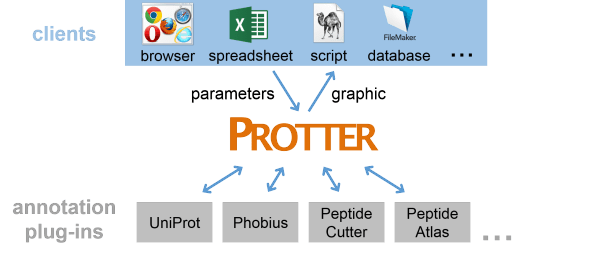
Protter Server
The ProtterServer is a webservice to visualize the sequence, topology and annotations of individual proteins. The server is written in Java. The webserver functionality is based on NanoHTTPD (version 1.21). For visualization a request is transformed into a TeX file which is processed within a LaTeX distribution (e.g. MiKTeX) by the TeXtopo package. Textopo takes care of the layout of protein topology. The resulting dvi file is converted to a svg file using dvisvgm. The initial svg is further processed to include the specified styles. Optionally, the resulting svg may be converted to a png or pdf image using the Apache Batik toolkit. To allow for visualization of annotations ProtterServer is using several other webservices to resolve sequence specific protein annotations. Currently UniProt, Phobius and PeptideCutter can provide sequences and annotations.
Protter WebApp
The Protter web application is a browser based interactive client for the Protter server. It is based on the AJAX framework jQuery (version 1.9, http://jquery.com/) extended by following plugins:
- Menu plugin from the Filament Group (http://www.filamentgroup.com)
- Mousewheel plugin from Brandon Aaron (http://brandonaaron.net)
- Splitter plugin from Dave Methvin
- TableDnD plugin from Denis Howlett
- Color Picker plugin from Lakshan Perera (www.laktek.com)
- SVG plugin from Keith Wood (http://keith-wood.name/svg.html)
- UI plugins from http://jqueryui.com
Annotation Data Sources
Protter not only displays your custom protein annotation but also retrieves and displays computed/curated annotations from various sources:
- UniProt — In Protter, the Universal Protein Resource (UniProt) can be used for fetching protein sequences, transmembrane topology, and a large number of annotated protein features, e.g. PTMs or sequence variants (for a complete list see http://www.uniprot.org/manual/sequence_annotation).
- Phobius — Protter uses Phobius for protein transmembrane topology prediction and signal peptide prediction.
- PeptideCutter — Protter uses ExPASy PeptideCutter to predict protease cleavage sites which can be indicated on the protein visualization.
- PeptideAtlas — Protter uses the public PeptideAtlas database to look up peptides that have been identified before. Identified peptides can be visualized in the protein plot.
Colors
Various parameters require the specification of a color. You can choose from 140 SVG compatible colors (see below) or specify any color by a hexadecimal code (e.g. FF0000 for red).
| aliceblue | antiquewhite | aqua | aquamarine | azure | beige |
| bisque | black | blanchedalmond | blue | blueviolet | brown |
| burlywood | cadetblue | chartreuse | chocolate | coral | cornflowerblue |
| cornsilk | crimson | cyan | darkblue | darkcyan | darkgoldenrod |
| darkgray | darkgreen | darkgrey | darkkhaki | darkmagenta | darkolivegreen |
| darkorange | darkorchid | darkred | darksalmon | darkseagreen | darkslateblue |
| darkslategray | darkslategrey | darkturquoise | darkviolet | deeppink | deepskyblue |
| dimgray | dimgrey | dodgerblue | firebrick | floralwhite | forestgreen |
| fuchsia | gainsboro | ghostwhite | gold | goldenrod | gray |
| green | greenyellow | grey | honeydew | hotpink | indianred |
| indigo | ivory | khaki | lavender | lavenderblush | lawngreen |
| lemonchiffon | lightblue | lightcoral | lightcyan | lightgoldenrodyellow | lightgray |
| lightgreen | lightgrey | lightpink | lightsalmon | lightseagreen | lightskyblue |
| lightslategray | lightslategrey | lightsteelblue | lightyellow | lime | limegreen |
| linen | magenta | maroon | mediumaquamarine | mediumblue | mediumorchid |
| mediumpurple | mediumseagreen | mediumslateblue | mediumspringgreen | mediumturquoise | mediumvioletred |
| midnightblue | mintcream | mistyrose | moccasin | navajowhite | navy |
| oldlace | olive | olivedrab | orange | orangered | orchid |
| palegoldenrod | palegreen | paleturquoise | palevioletred | papayawhip | peachpuff |
| peru | pink | plum | powderblue | purple | red |
| rosybrown | royalblue | saddlebrown | salmon | sandybrown | seagreen |
| seashell | sienna | silver | skyblue | slateblue | slategray |
| slategrey | snow | springgreen | steelblue | tan | teal |
| thistle | tomato | turquoise | violet | wheat | white |
| whitesmoke | yellow | yellowgreen |